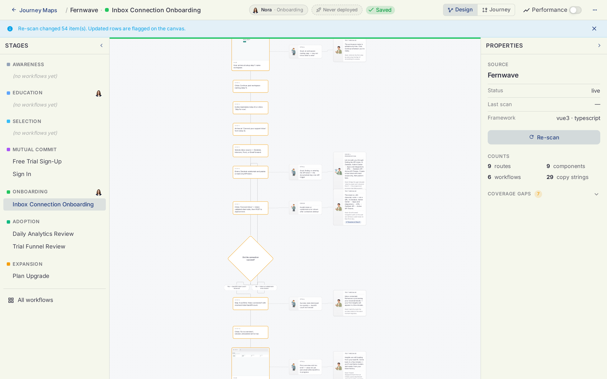

Holostaff AI Documentation
Holostaff AI puts in-product customer success on autopilot. AI staff live inside your product. They know it from your code, spot each user the moment they struggle, and step in right there in the session. Shipped to your app with one pull request.
What is Holostaff AI?
Holostaff gives every user of your product a personal success manager.
These success managers are AI staff members that work inside your product itself. Not in a separate chat window. Not in an email sequence. They learn your product by reading its codebase, watch each user's session for signs of struggle, and help at the exact moment it matters. They can talk, point, guide, or take the stuck step together with the user on screen.
Holostaff is not a chatbot. A chatbot waits to be asked. It is not a product tour. Tours are pre-recorded and the same for everyone. It is not a customer success back office. Those tools produce health scores and emails after the fact. Holostaff acts inside the product, during the session, one user at a time.
How it works
- Scan. Run
npx @holostaff/cliin your repository. An agent reads the code and learns your product the way an engineer would. No instrumentation, no data migration. - Map. The scan draws every user journey on a canvas: routes, workflows, screens, and the places users stall or drop off. This is your Journey Map.
- Hire. Turn the map's proposals into staff. Each copilot gets a face, a voice, and a job tied to a journey stage: onboarding, activation, retention, expansion.
- Rehearse. Before any real user meets them, your staff face simulated users. AI visitors drive a real browser through your actual scenarios, and every reply is graded on the Evaluations board.
- Ship.
holostaff deployopens a pull request. Your engineers review it like any other change. One line plus the SDK puts staff on duty. - Measure. The Impact dashboard attributes activation, retention, and expansion lift to specific interventions, with a live feed as they happen.
The product surfaces
- Journey Maps. The canvas your scan produces. Every stage a user passes through, with coverage gaps flagged.
- Copilots. Your AI staff roster. Create, assign, and manage the success managers on duty.
- Evaluations. The rehearsal room. Simulated users pressure-test every copilot before launch and after every change.
- Impact. Proof of lift. Funnel views, intervention outcomes, and live activity.
Who is in control?
You are.
- Every staff member is approved by you before going live.
- Staff rehearse against simulated users first, and you see the grades.
- Deployment goes through your normal pull request review.
- Every intervention is logged. Everything is revocable.
Who is Holostaff for?
SaaS and software teams that lose users between sign-up and first value. If your analytics show the drop-off but nobody is there when it happens, Holostaff staffs that moment.

Quick links
- Quickstart — one command to put your product on the map
- Journey Maps — the canvas your scan produces
- Copilots — hire, assign, publish
- Evaluations — simulated users rehearse your staff
- Deploying — the PR path and the SDK
- Impact — what your copilots changed
- CLI reference — every command, CI mode, and what leaves your machine